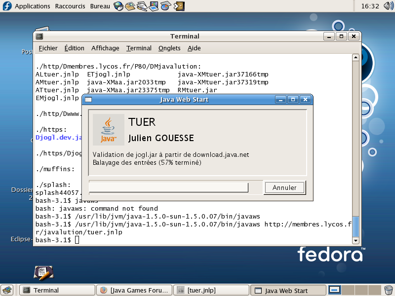
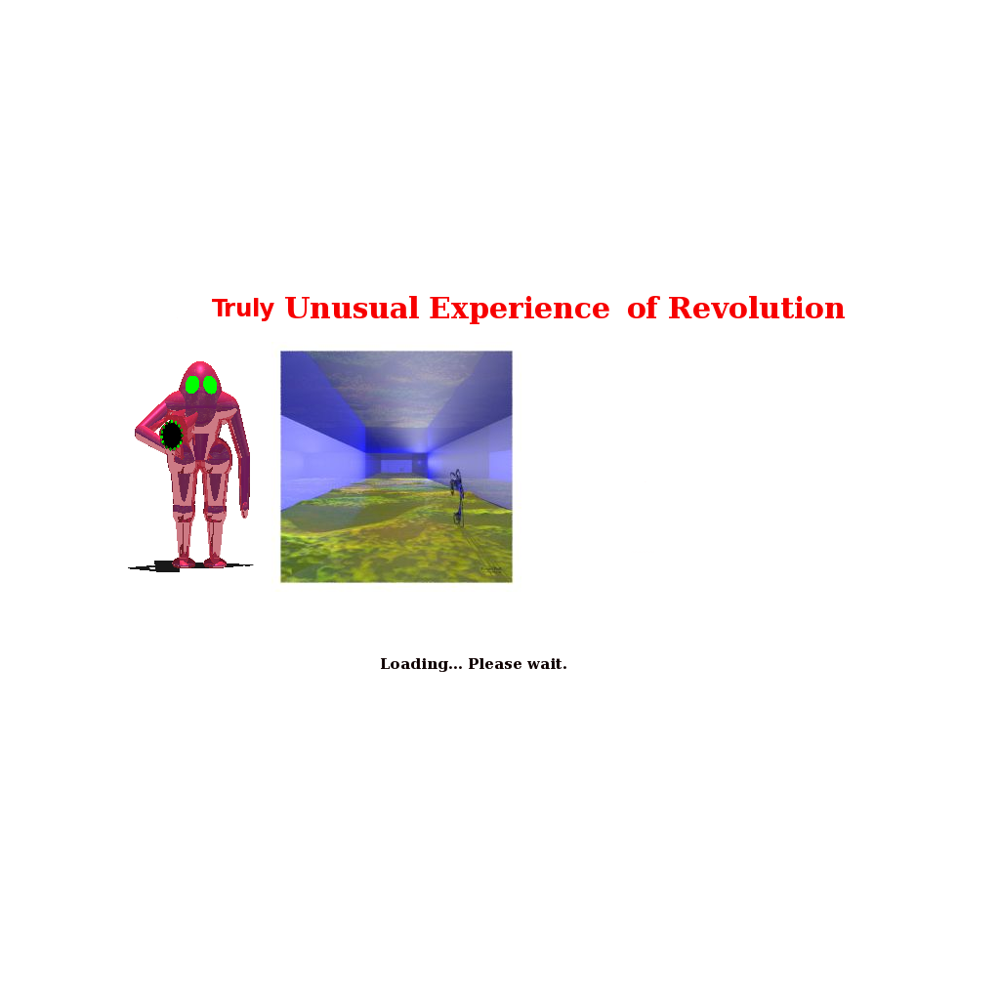
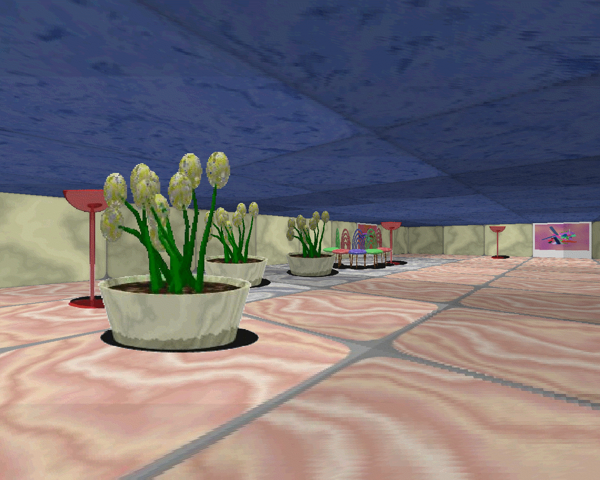
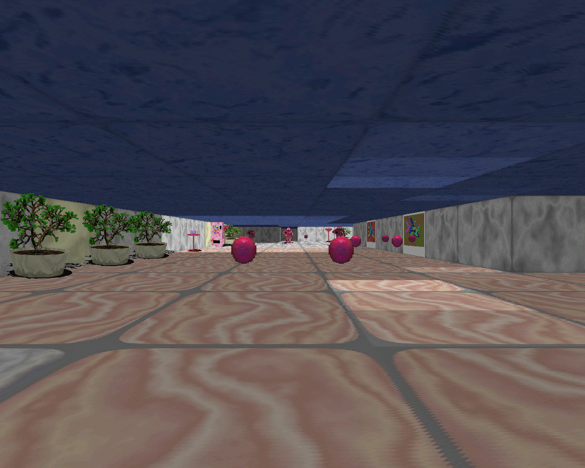
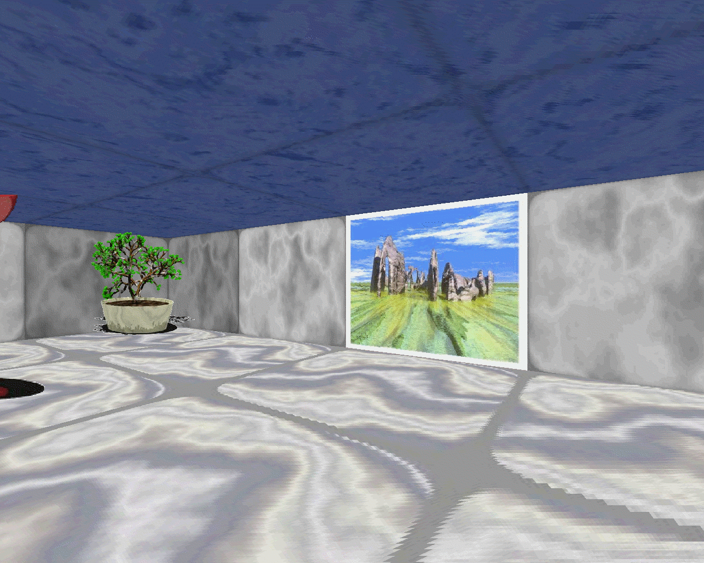
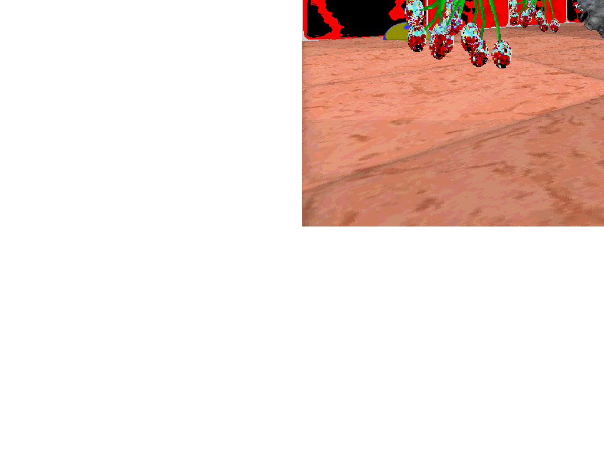
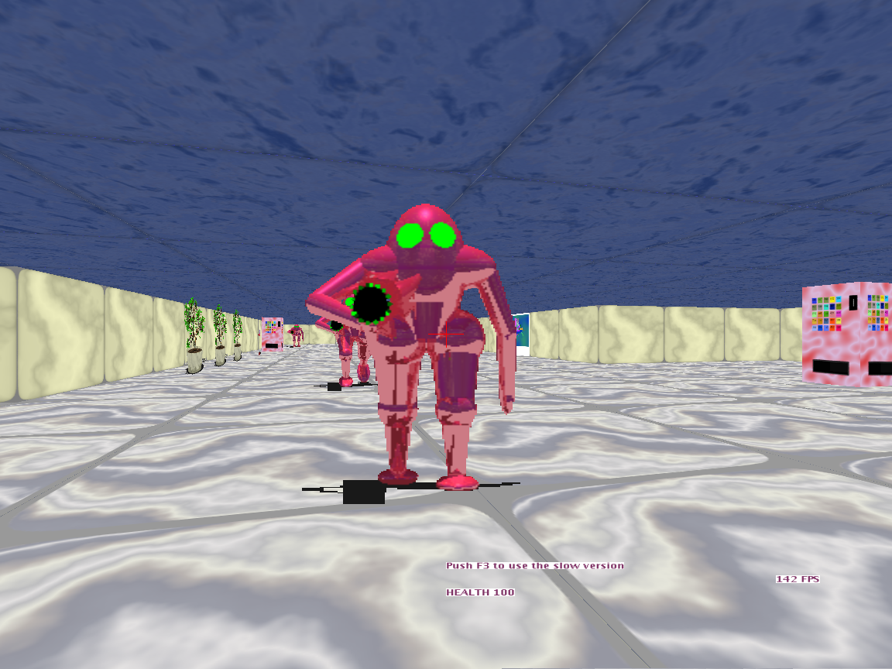
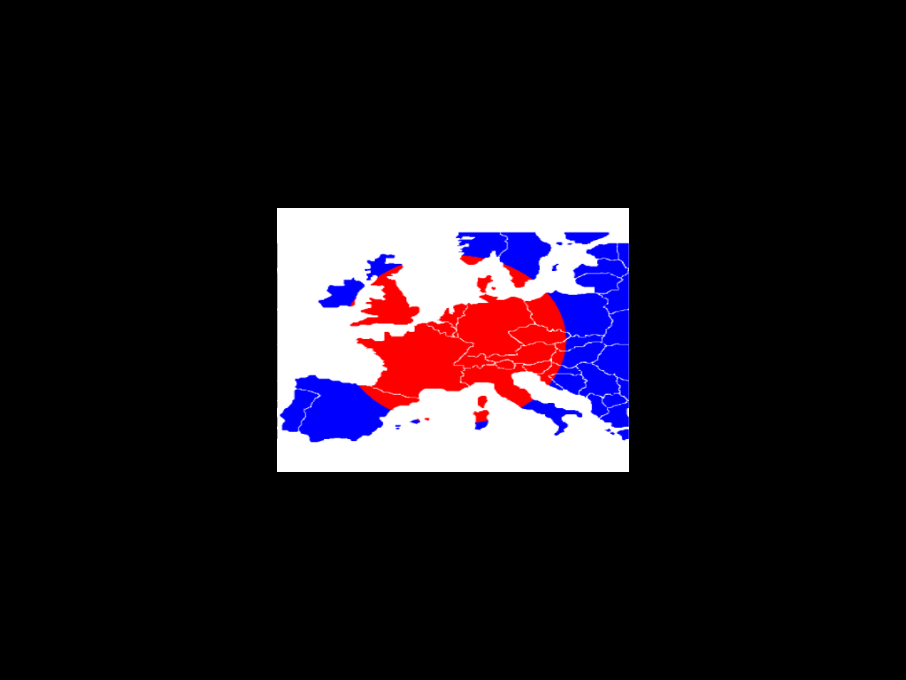

Truly Unusual Experience of Revolution® est une marque de commerce enregistrée par Julien Gouesse auprès de l'institut national de la propriété industrielle en classe 9 (logiciels de jeux) dont le numéro national est 14 4 079 878. Son utilisation sans l'autorisation préalable du détenteur pour désigner tout produit de cette classe en France et à l'étranger est strictement interdite. Néanmoins, utiliser le nom Unix du jeu ("tuer") pour le désigner est possible et vivement recommandé.
Les joueurs sont encouragés à faire des vidéos utilisant les contenus du jeu, telles que des vidéos d'exploration ou d'instruction. La publication de ces vidéos sur quelconques sites web ou services de partage de vidéos convient à l'auteur tant qu'ils respectent la règle sur la marque de commerce et qu'ils ne prétendent pas que leurs vidéos sont officielles. Distribuer les éléments du jeu séparément requiert de respecter leurs licences. L'utilisation des contenus du jeu doit être strictement non commerciale. Par là l'auteur entend qu'ils ne peuvent faire payer les utilisateurs pour voir ou accéder à leurs vidéos. Ils ne peuvent pas non plus vendre ou céder leurs vidéos à d'autres contre un paiement de n'importe quel type. Ils ne peuvent pas les monétiser via un programme de partenariat sur un site de partage de vidéos. Ils ne peuvent pas les embarquer dans une page web contenant des publicités ou des liens sponsorisés. Les contenus du jeu ne peuvent pas être mélangés avec des publicités dans leurs vidéos. Ils seront légalement responsables des commentaires postés près de leurs vidéos et ils seront poursuivis s'ils refusent sciemment de retirer des commentaires injurieux ou diffamatoires contre ce jeu ou son auteur. Cette ensemble de règles s'applique uniquement aux contenus de ce jeu. S'ils incluent des contenus d'autres personnes dans leurs vidéos, ils devront obtenir la permission des détenteurs respectifs.
Le capitalisme menait notre monde à sa perte. La précarité et le chômage augmentaient, la nature mourrait, les droits sociaux disparaissaient rapidement, les services publics aussi. La pauvreté a forcé beaucoup de gens à vivre sans domicile et à voler de la nourriture. La corruption de nos gouvernements transforma nos démocraties en dictatures. Tous les aspects de nos vies étaient infectés par la manière de penser mercantile laquelle menait à des discriminations, un partage des richesses injuste, une baisse de la qualité de vie, plus d'accidents dans les trains, des jeux vidéo moins bons, de la nourriture moins bonne, des soins de santé moins bons, des conditions de travail moins bonnes, une éducation moins bonne, des voitures moins sûres, plus de dettes, plus de liberté d'expression, plus du tout de liberté. Toutes les manifestations étaient réprimées très violemment bien que la police évitait de tuer des gens la plupart du temps.
Cependant, cette répression est allé plus loin une fois, les policiers ont abattu plusieurs étudiants pendant un blocage à l'université de la Sorbonne à Paris. La même chose s'est produit en Grèce à Athènes. Les étudiants vivants témoins de ces événements sont devenus extrêmement violents et ont mis le feu à toutes les commissariats de police. Les ouvriers d'usine et les employés d'entreprises privées investis dans des grèves et des mobilisations sont venus les aider. Les policiers ont décidé d'utiliser des armes mortelles pour mettre fin à cette insurrection mais ils ont échoué, le reste de la population éprouvaient une certaine sympathie pour les grévistes et certains les ont rejoints. Quelques gouvernements révolutionnaires de transition supportés par les gens ont remplacé les gouvernements capitalistes corrompus. La situation est devenue plus paisible. Le sang a cessé de couler. Néanmoins, quelques policiers, quelques soldats et beaucoup de membres de milices para-militaires d'extrême-droite veulent arrêter la révolution par tous les moyens, ils sont financés par des entreprises privées, les précédents gouvernements corrompus et l'Organisation Mondiale du Commerce. Votre missions consiste à les arrêter et à éviter les pertes civiles. S'ils refusent de se rendre, tirez à vue, vous avez le permis de tuer.
Le but de ce projet est de créer un nouveau jeu de tir en vue subjective utilisant le langage de programmation Java,
inspiré de Goldeneye 007, Doom, Quake et Turok, et rivalisant avec des jeux comme Cube, Open Arena et
Alien Arena 2006. J'ai (Julien Gouesse, développeur) commencé à travailler dessus en octobre 2006 et
cela continuera au moins jusqu'en 2020, en impliquant plusieurs autres personnes dans les éléments graphiques. L'utlisation de
JMonkeyEngine 2 aurait dû me faire gagner beaucoup de temps comme c'est un excellent moteur 3D mais il y avait trop
de bogues. C'est pourquoi j'utilise Ardor3D depuis septembre 2009.
Pour le moment, la priorité
est donnée à la programmation des efforts progressifs seront faits pour améliorer les graphismes qui sont assez
moches (sauf le pistolet).
Je ne prévois pas de créer la prochaine application qui va bouleverser le "marché" comme ce n'est pas réaliste.
Cette version reposait sur d3caster en octobre 2006 puis sur mon propre moteur de 2007 jusqu'à septembre 2008.
Java Web Start était très facile à utiliser. Il premettait aux utilisateurs finaux d'installer le jeu très facilement. Vous aviez juste besoin d'un clic (ou quelques uns) pour pouvoir jouer. L'image ci-dessous montre ce qui arrive quand vous lancez le jeu :
Si ça marche bien, à la fin du téléchargement, vous verrez ceci :
Le chargement peut durer au plus 20 secondes, cela dépend de la vitesse de votre ordinateur. Après le chargement, vous verrez ceci :
Maintenant, il y a quelques ennemis qui essaient de vous abattre. Remarquez qu'il y a un système d'éclairage dynamique. Quand le projectiles se déplace, il y a une lumière autour de lui, vous pouvez la voir au plafond et au sol :
Comme vous pouvez le voir, il y a quelques jolies images qui apparaissent quand vous battez tous les ennemis dans une salle. Ces images ont été créées par Vincent Stahl :
Vous pourriez être déçu par la fréquence d'affichage faible de mon jeu. Les performances dépendent largement de la vitesse du microprocesseur, la vitesse de la mémoire vive, la vitesse de votre bus graphique et la puissance de votre carte graphique. Par exemple, j'utilise un processeur céléron 700 Mhz avec 256 Mo de RAM à 133 Mhz et une ATI Radeon 9250 Pro. J'ai seulement au plus 8 images à la seconde. Sur un ordinateur récent, vous pouvez avoir environ 500 images à la seconde.
Par le passé, beaucoup de gens se demandaient pourquoi c'est si lent alors que ça utilise OpenGL. Le problème venait du raycasting. Le mode "lent" du jeu utilisait une bonne dose de rendu logiciel avec un algorithme très lent appelé raycasting. Plus l'écran était grand, plus le jeu était lent. Le jeu qui a inspiré TUER utilise uniquement du rendu logiciel et est entre 8 et 64 fois plus lent que le mien quand vous le mettez en mode plein écran. Mon jeu a utilisé les pipelines OpenGL après avoir renoncé au raycasting pour augmenter la vitesse d'affichage. Comme ce n'était pas suffisant, j'ai complètement retiré le mode lent et je n'utilise plus du tout le raycasting. Regardez le premier affichage que j'ai obtenu quand j'ai commencé à modifier le moteur :
Au début de la modification du système de rendu, l'image était inversée verticalement, il y avait une autre inversion dans l'ordre des composantes de couleur et je pouvais voir seulement un quart de l'image attendue. Si vous êtes curieux, regardez le code source!
Le mode expérimental du jeu est devenu très rapide comme vous pouvez le voir ci-dessous (testé sous Mandriva 2007, 2 Go DDRAM, ATI X1950 Pro 256 MB AGP 8X).
La maquette utilisant JMonkeyEngine 2.0 était prometteuse, j'ai travaillé dessus de septembre 2008 à octobre 2009. Psionic et Maxime ont modélisé quelques bonnes armes. Malheureusement, ce moteur contenait trop de bogues, je passais la majeure partie de mon temps à les corriger.
La maquette utilisant Ardor3D est vraiment prometteuse! J'ai commencé à travailler dessus en octobre 2009. L'interface graphique a été coplètement réécrite, elle est moins moche et plus dynamique. TUER revient à son arrière-plan politique habituel.
La liste des bogues (dont les demandes d'amélioration) est ici.
TUER a utilisé 4 moteurs différents et sa feuille de route a été mise à jour plusieurs fois sur mon blog.